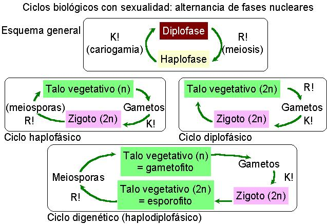

En los vegetales suele haber una alternancia
de fases nucleares:
| Fases vegetativas y nivel de ploidía | Términos franceses | Términos anglosajones |
| Una sola generación haploide | Monogenético haplofásico | Haplobióntico haploide |
| Una sola generación diploide | Monogenético diplofásico | Haplobióntico diploide |
| Dos generaciones (n y 2n) | Digenético haplodiplofásico | Diplobióntico haplodiploide |
| Dos generaciones (n y n+n) | Digenético haplodicariofásico | Diplobióntico haplodicariótico |
| Tres generaciones (varios casos) |
Trigenético |
Triplobióntico (poco usado) |
